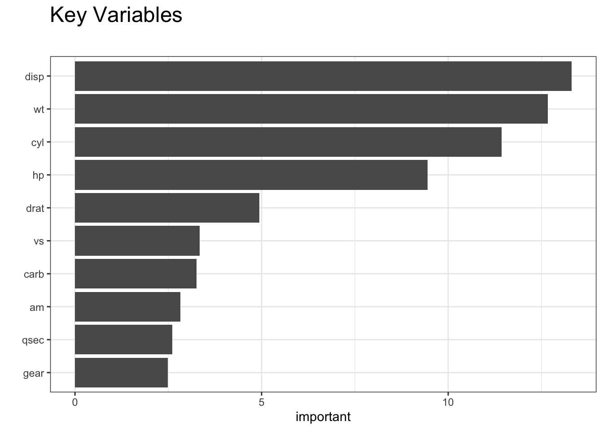

Chapter 9 Using Methods Other Than lm
Let’s look at random forests for this to see if it improves the situation. Note that we aren’t, at least at this point, trying to understand the underlying details and subtleties of any of alternative functions we might use although that is ultimately very important. However, in the interest of motivating action, we’ll defer the conversation until later.
https://stats.stackexchange.com/questions/330153/predictors-in-random-forest#330154
The random forest algorithm, as implemented by Breiman, is designed such that each predictor is given a fair chance to manifest its importance in the overall forest model. Each tree is built by taking a random set of features, and then choosing the feature with the best split at each node, starting with the root. Features/predictors which are relevant will influence the tree heavily in the first few splits."
So we can somewhat blindly use the function to get a sense of what the most important predictors are as well as how many trees to “grow” in order to minimize errors. We could also adjust the mtry parameter to see influence how many variables are randomly sampled at each tree split. For now. well stick with some basic defaults:
percent <- .80
idx <- sample(1:nrow(mtcars),round(percent*nrow(mtcars)))
train <- mtcars[idx,]
test <- mtcars[-idx,]suppressMessages(library(randomForest))
# See https://www.r-bloggers.com/part-4a-modelling-predicting-the-amount-of-rain/
my_rf <- randomForest(mpg~.,
data=train,
mtry=3, # This is the default
importance=TRUE)
# Check out the predictions
(test_pred_forest <- predict(my_rf,test))## Merc 280C Merc 450SE Lincoln Continental Fiat 128
## 20.03076 16.15387 12.90906 27.81147
## Camaro Z28 Pontiac Firebird
## 15.43021 16.27847## [1] 2.752575## [1] 2.752575imp <- varImp(my_rf)
imp.features <- tibble(variables = row.names(imp),
importance = imp[, 1])
#
ggplot(imp.features,
aes(x= reorder(variables, importance) ,
y = importance)) +
geom_bar(stat = "identity") +
coord_flip() +
theme_bw() +
xlab("") +
ylab("important")+
ggtitle("Key Variables \n") +
theme(plot.title = element_text(size=18))
So the thing here is that we have a parameter called mtry that influences the outcome but is not necessarily something that we know how to optimally set without some experimentation. The mtry value is the number of variables that are randomly sampled at each tree split.
The method will pick a default value based on the number of predictor variables but it’s not guaranteed to be the best value - it’s just a starting point. We could write a loop to “walk through” various values of the mtry parameter.
make_mtcars_rf <- function(mtry=3) {
my_rf <- randomForest(mpg~.,
data=train,
mtry=mtry,
importance=TRUE)
# Check out the predictions
(test_pred_rf <- predict(my_rf,test))
(rmse_rf <- compute_rmse(test_pred_rf,test$mpg))
return(rmse_rf)
}So now we could check out RMSE for varying values of mtry. The following will call the randomForest package 5 times. Starting with the first iteration, the value of mtry will be 3, the next time it will be 4, and so on until the last iteration where it will be 8. This is just an experiment to see if varying mtry will help minimize the RMSE of our model. We also have to be careful not to pick incorrect values for mtry so reading the help page for the randomForest package would be helpful. For now, let’s assume that what we are doing is okay.
## [1] 2.714520 2.708959 2.671706 2.675977 2.594984 2.699084While this is fine, it would be nice if there were an easier way to handle this process. Besides, if we pick another method (e.g. the ranger function) then we have to deal with whatever arguments that method requires. This leads to a more general discussion on model parameters vs hyperparameters.
9.1 Parameters vs Hyperparameters
Model parameters are things that are generated as part of the modeling process. They are the product or result of model fitting. These might be things like slope and intercept from a linear model.
Hyperparameters (sometimes called metaparameters) represent information that is supplied in the form of an argument prior the call to the method to generate results. These parameters might not be something one can intelligently set without some experimentation.
Of course most modeling functions one would call in R have default values for various arguments but this does not mean that the defaults are appropriate for all cases.
To see the hyper parameters of the lm function, check the help page or use the args function. As an example, the method argument is a hyper parameter which has a default value of qr. This could be changed but one would need a reason to do so.
## function (formula, data, subset, weights, na.action, method = "qr",
## model = TRUE, x = FALSE, y = FALSE, qr = TRUE, singular.ok = TRUE,
## contrasts = NULL, offset, ...)
## NULL9.2 Hyperparameter Tuning
The process of finding the “right” values for these parameters is generally referred to as “hypermarket tuning”. Different values are supplied for each invocation of a method (as we did in the above example) to see the effect on the model. We might do this many times to arrive at the optimal parameter set to produce a model that offers the “best” explanatory and predictive power.
Just to review - things like coefficients and residuals are parameters that are generated by a call to the lm function. They don’t actually exist until the function does some work. However, the “weights” parameter referred to in the help page for the lm function is a hyperparameter since one sets this (or accepts the default value) prior to running the command. So hyperparameters are specific to whatever algorithm (and supporting R function) you are using. Concepts such as coefficients and intercept, however, are parameters that would be generated by any method that implements linear regression.
More generally, what if we wanted to use other functions to do some predicting ? There are some reasonable alternatives to the humble lm function. But they would require some investigation prior to use to understand what parameters are supported by those respective functions.
## [1] "rpart arguments"## function (formula, data, weights, subset, na.action = na.rpart,
## method, model = FALSE, x = FALSE, y = TRUE, parms, control,
## cost, ...)
## NULL## [1] "glm arguments"## function (formula, family = gaussian, data, weights, subset,
## na.action, start = NULL, etastart, mustart, offset, control = list(...),
## model = TRUE, method = "glm.fit", x = FALSE, y = TRUE, singular.ok = TRUE,
## contrasts = NULL, ...)
## NULL## [1] "pls args"## function (..., method = pls.options()$plsralg)
## NULL## [1] "random Forest arguments"## function (x, ...)
## NULL